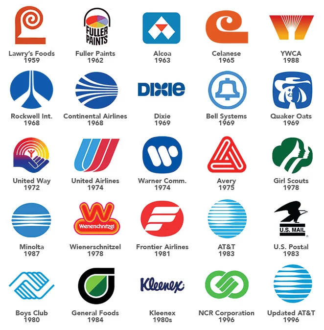

Project 2: Personal Logo
Concept Development 20% · Final 80%

Logos by Saul Bass
01Introduction
We’ve watched Logorama, we’ve discussed logos, and you’ve done a design challenge to start to explore possible directions for your personal logo. Now it’s time to iterate.
Instead of locking in to one path just yet, let your pencil guide you in multiple directions.
Remember that a logo must communicate at small sizes, so intricate detail may not register.
02Discussion
- Paul Rand Logos: IBM, ABC, UPS, Westinghouse and more, from the designer’s archive.
- Saul Bass Logos: AT&T, United, Girl Scouts, Quaker and others, with their dates.
- Nike Swoosh Logo History: how a $35 student commission became the Swoosh.
- History of the Apple Logo: from a Newton engraving to the bitten apple.
- Paul Rand, “Logos, Flags, and Escutcheons” (1991): Rand’s essay on what a logo can and cannot do.
- Paul Rand’s NeXT Logo Presentation: the booklet Rand made to present one logo to Steve Jobs.
- Paula Scher on the Citi logo: a short film of Scher explaining the logo she sketched on a napkin in seconds: “done in a second and 34 years.”
- The Gap logo, 2010: Gap replaced its blue box, the public revolted online, and the old logo was back within a week.
03Concept Development
20% · Due Tue Oct 27
Produce 30 sketches exploring your personal logo. Sketches may be drawn on paper or digitally, but must be posted as a single contact sheet.
- Black and white only
- Original marks only
- Readable at small size
- On 8.5×11 or 11×17 paper, draw a grid of equal squares, one sketch per square. Use as many pages as you need for 30 squares. Keep each logo about the same size inside its square.
04Final
80% · Due Tue Nov 3
Select the 3 strongest sketches from your set. Produce 10 digital iterations of each (30 total), then designate one final mark.
Post:
- The iteration sheets
- The final mark at multiple sizes (small, medium, large)
- A brief write-up on your process
Graded.